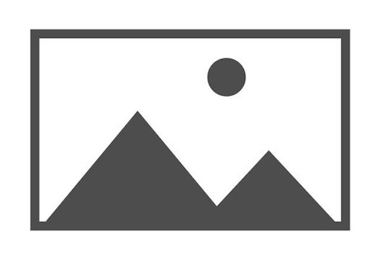

Discover Page
Larco Mar, Lima-Peru

Larco Mar is a modern complex and it is known for its breathtaking
panoramic views of the ocean, creating a picturesque setting for
visitors. The architecture of Larco Mar is inspired by the colonial
style, featuring beautiful arches, vibrant colors, and open spaces
that capture the essence of Lima's coastal charm.
Population: Lima is the capital city of Peru and has a population of
over 9 million people, making it the most populous city in Peru and
one of the largest cities in South America. Median Age: The median age
in Lima is approximately 31 years.
Nazca Lines, Nazca-Peru
Description: The Nazca Lines in Peru are a fascinating and mysterious
archaeological wonder. Located in the arid Nazca Desert, these
enormous geoglyphs etched into the desert floor have intrigued
researchers, archaeologists, and visitors for decades. The Nazca Lines
consist of hundreds of intricate designs, including various shapes,
lines, and depictions of animals, plants, and geometric patterns.
Population: Nazca is a small city in southern Peru, and its population
is approximately 30,000 residents.
Machu Picchu, Cuzco-Peru
Machu Picchu is an ancient Incan citadel located in the mountains of
Peru, South America. It is situated high in the Andes Mountains, above
the Urubamba River valley. Machu Picchu is renowned for its remarkable
architecture, stunning natural surroundings, and its historical and
cultural significance.
Population: Cusco has a population of approximately 432,000 residents.
Historical Significance: Cusco was the historic capital of
the Inca Empire and is known for its rich cultural heritage and
archaeological sites.
Climate: Cusco experiences a subtropical highland climate. Due to its
elevation of around 3,400 meters (11,150 feet), temperatures are
generally cool to mild year-round, with cool nights and warm days
during the summer months.
Mancora, Piura-Peru
Mancora is a vibrant beach town located on the northern coast of Peru,
overlooking the Pacific Ocean. It is known for its stunning beaches,
consistent waves, and lively atmosphere, making it a popular
destination for surfers, beach lovers.
Population: Mancora is a small beach town in northern Peru, and its
population is relatively smaller compared to larger cities. The exact
population figures may vary, but it is primarily a tourist destination
with a smaller permanent population.
Climate: Mancora has a warm desert climate, with dry and sunny
conditions throughout the year. The average temperature hovers around
25-30 degrees Celsius (77-86 degrees Fahrenheit).
Floring Islands, Puno-Peru
Floating Islands, located in Puno, Peru, are a unique and captivating
attraction in the region. These islands are man-made structures
constructed entirely out of reeds that grow abundantly in Lake
Titicaca, the highest navigable lake in the world. The Floating
Islands, also known as the Uros Islands, are inhabited by the Uros
people, who have lived on these islands for centuries. The Uros people
use the totora reeds found in the lake to build and maintain their
floating homes, as well as the islands themselves. The reeds are
layered and tightly bound to create a solid base, providing stability
for the islands.
Population: Puno is a city located on the shores of Lake Titicaca and
has a population of around 150,000 residents.